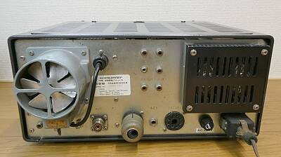
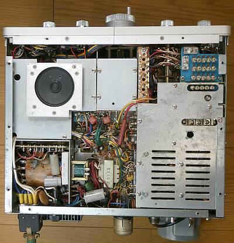
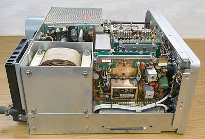
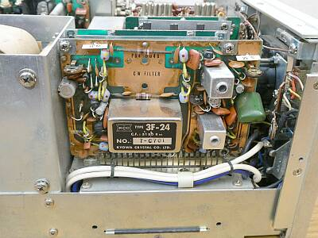
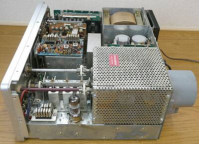
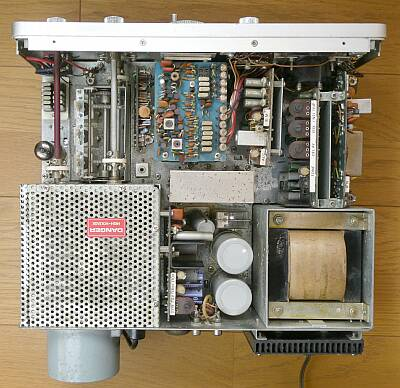
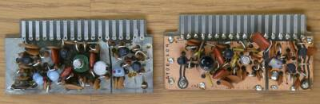
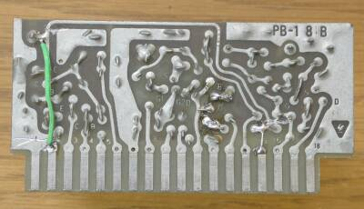

 |
リアパネルです
過大信号入力保護のランプヒューズが無いくらいで、ほぼほぼ、ＦＴ-１０１です
|
 |
シャーシ下面です
まさしく、ＦＴ-１０１そのものに見えます |
 |
本体左サイドです
VFOの上に、見慣れない基板が載っています
これがＣＢ帯２３ＣＨ固定ＣＨ用の2グループのクリスタル発振ユニットです
バンド周波数とＶＦＯ周波数の2グループの組み合わせで必要な２３ＣＨを得ています |
 |
IFユニットのアップです
明らかに、ＦＴ-１０１のユニットとは異なります
フィルタの左側は、ＮＢ部です
ＦＴ-１０１の場合、ＮＢユニットは単独の基板で設計されています
本機のＮＢは、ある意味簡易型のようです
|
 |
本体右サイドです
ＶＦＯ上に見える基板以外、ほぼほぼＦＴ-１０１です |
 |
シャーシ上側を写しています
・ＲＦユニット
・ＩＦユニット
・変調ユニット
・電源マーカーユニット
・ＡＦユニット
ＦＴ-１０１のものとは、僅かずつではありますが、少し違った設計がなされています
CB用２３CHのクリスタルは、本機独特です |
 |
僅かの違いといっても、ここでの差は大きい
ＲＦユニット １ｓｔミキサー部
ＣＢ２３ＣＨのために、異なった回路となっていました
受信ミキサーも、ＦＴ-１０１ではＦＥＴのところが、バイポーラＴｒでした（入力を、リードリレーでON-OFF） |
 |
このＲＦユニットが原因で感度が取れないことは確認できたので（通常のバンド切替においては、２つの基板の動作に差がないことが分かった）、１０１Ｂに使われているＲＦユニットを入手して、このＴＳ２８８Ａで使えるよう改造をしました（デバイスの交換では改善しなかったため）
パターンカット４ヵ所と、ジャンパ線２本の追加です、 |
クラリファイヤ
通常のＶＦＯ動作時、ＣＢ２３ＣＨ固定ＣＨ動作時、いずれの時にも動作するようになっています（二連ＶＲ）
ＲＦプロセッサー
この機能の内臓はありません |
| |
参考に ＦＴ-１０１ＥＳ |
入手時点では、ＰＬ切れ、ＡＣトランス周りの配線・・・ＡＣ２２０Ｖ入力を１００Ｖ入力に変更してあるのですが、その配線が危なっかしい、マーカー動作が異常（異常発振）、受信感度が低いなど、色々なトラブルを抱えていましたが、必要な対応をすることで、とりあえず送信も含めカタログスペックをクリアすることが出来ました
１０１関係のAssyは、入手しやすい点も功を奏しました
比較用に、ＦＴ-１０１ＥＳを入手したというのが本当のところで、ＡＣケーブルほか、部品取り用に別にＦＴ-１０１を入手していました（この１０１は、本当の机上の飾りにと友人が持っていきました） |
| |
さて、最後はお決まりのスペック紹介
１４．２００ＭＨｚ
ＳＳＢ ０．２５μＶ 入力 S/N １０ｄｂ以上 ４０μＶ入力時、Ｓ９に
ＴＵＮＥ おおよそ１００Ｗ
送信においては、ＡＬＣ動作を見ると、球のアクティビティは低下をしているようです |